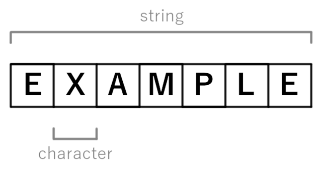

Knuth-Morris-Pratt (KMP) Algorithms
In computer science, the Knuth–Morris–Pratt algorithm (or KMP algorithm) is a string-searching algorithm that searches for occurrences of a "word" W within a main "text string" S by employing the observation that when a mismatch occurs, the word itself embodies sufficient information to determine where the next match could begin, thus bypassing re-examination of previously matched characters.
KMP Implementation | O(m + n)
// return the occurrences of pattern in string using KMP algorithm
func KMP(s,pat string) int {
if len(pat) == 0 { return 0 }
lps := LBS(pat)
// lps and pat will start at 1
lps = append([]int{0},lps...)
pat = "_" + pat // the first char can be anything, since it never use
i, j := 0, 0
ans := 0
for i < len(s) {
if s[i] == pat[j+1] { // match
if j + 1 == len(pat) - 1 { // pattern complete
ans += 1
j = 0 // reset j, count non-overlap pattern
i += 1
continue
}
j += 1
i += 1
} else if j > 0 {
j = lps[j]
} else {
i += 1
}
}
return ans
}
func LBS(pat string) []int {
lps := make([]int, len(pat))
m := map[rune]int{}
for i,r := range pat {
if in, ok := m[r]; ok {
if rune(pat[i]) == r {
lps[i] = lps[i-1] + 1
} else {
lps[i] = in
}
} else {
lps[i] = 0
m[r] = i
}
}
return lps
}In the Knuth-Morris-Pratt (KMP) algorithm, "LPS" stands for "Longest Prefix Suffix." The LPS array is a crucial part of the KMP algorithm and is used to optimize the string searching process. The Longest Prefix Suffix (LPS) of a string refers to the length of the longest proper prefix of the string that is also a suffix of the same string. In other words, it measures the length of the longest substring at the end of the string that matches the beginning of the string. For example, consider the string "ABAB" and its LPS values: The LPS value for the first character "A" is 0 (no proper prefix that is also a suffix). The LPS value for the second character "B" is 0. The LPS value for the third character "A" is 1 (the substring "A" at the end matches the prefix "A"). The LPS value for the fourth character "B" is 2 (the substring "AB" at the end matches the prefix "AB"). In the KMP algorithm, the LPS array is precomputed for the pattern (substring being searched for) before performing the actual string search. The LPS array values guide the algorithm's behavior when a mismatch occurs during string searching. They help determine how far the algorithm can skip ahead in the text without re-comparing characters unnecessarily.